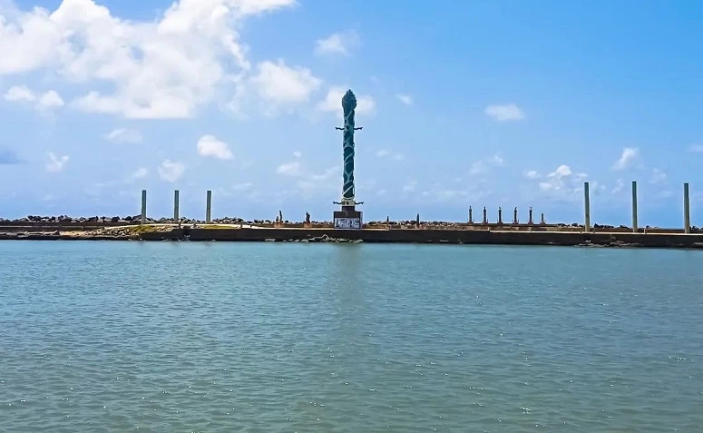
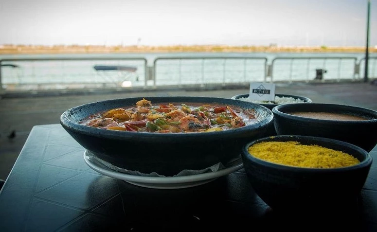
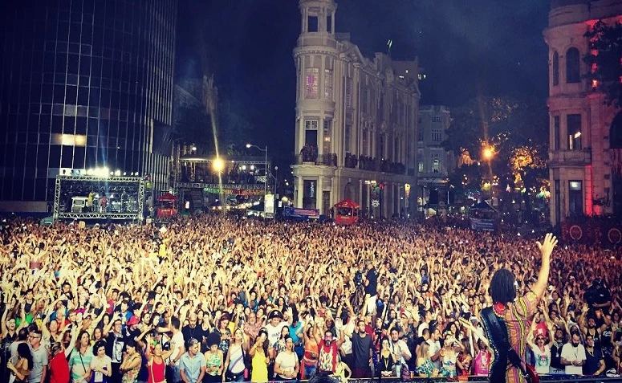

Marco Zero
Conheça o Marco Zero um dos pontos mais famosos do Recife
Praça do marco zero:

Também chamada de praça Barão do Rio Branco, o local é considerado um dos destinos mais visitados de Recife.
Parque das esculturas Francisco Brennand

O Parque das Esculturas homenageia o artista pernambucano Francisco Brennand, pois destaca as suas principais obras no local.
Restaurante Seu Boteco

Localizado no Armazém do Porto, o restaurante Seu Boteco é um dos mais tradicionais da região.
Carnaval Marco Zero

Programe sua viagem para Recife na época do carnaval e desfrute de uma das melhores folias da cidade. Afinal, é no local que costuma acontecer o principal carnaval de Pernambuco.